This lab allows us to familiarize with the basic functionalities of Arduino Uno and some common external components. We learn how to set up hardware-software interface by writing a program that controls the built-in and external LEDs through digital signal. We also explore techniques of controlling components through analog signal using a potentiometer. In the end we assemble our robot with servos and have it perform simple autonomous driving.
Materials
1 Arduino Uno
1 USB cable
1 Continuous rotation servos
1 Pushbutton
1 LED
1 Potentiometer
1 Solderless breadboard
Several resistors
Several wires
Source Code
The code written for this lab can be found here: Lab 1 Code Files
Part 1: Blinking an internal LED
All great things start from baby steps. The first thing we did was the simple task of making the internal LED of the Arduino board blink. We used a pre-existing template that came with the Arduino IDE, which can be found by clicking File > Examples > 1.Basics > Blink . The code is shown below.
void setup() {
// initialize digital pin LED_BUILTIN as an output.
pinMode(LED_BUILTIN, OUTPUT);
}
// the loop function runs over and over again forever
void loop() {
digitalWrite(LED_BUILTIN, HIGH); // turn the LED on
delay(1000); // wait for a second
digitalWrite(LED_BUILTIN, LOW); // turn the LED off
delay(1000); // wait for a second
}
Compiled and loaded onto the Arduino board, the internal LED successfully started blinking, as shown below.
Part 2: Blinking an external LED
After getting the internal LED to work, it’s time to try to hook the board up with an external LED. We did this by setting up an LED component with a series resistor on a breadboard and wiring it to one of the I/O pins of the Arduino board. Then we modified the code for the internal LED in the way as shown below. Originally, the arduino failed to program since we had the LED connected to pin 0 (a serial communication pin), but removing the LED while programming resolved this issue.
//Instances of LED_BUILTIN replaced with pin #0
pinMode(0, OUTPUT);
digitalWrite(0, HIGH);
digitalWrite(0, LOW);
And then after programming, the external LED indeed blinked, as we can see:
This way we could turn the external LED on and off. Next, we want to make sure that all of the digital I/O pins are functional and undamaged. To do this, we further modified the previous code as shown below:
for(int i = 0; i<=13; i++){ //Turn on all digital pins
digitalWrite(i, HIGH);
}
It includes a for-loop to iterate over every digital pin and repeat the blinking request. Similar for loops were used for setting all of the digital pins to outputs and for setting the pins to LOW. After observing that the LED blinked for all the pins, we concluded that all digital pins work.
Part 3: Reading the value of a potentiometer via the serial port
First before writing any code, we connected 5V to one side of the potentiometer, ground to the other side, and the wiper (center) connection to a 300 ohm resistor to analog input 0 on the arduino. Finally we wrote the code shown below to read the analog value and print it out on the serial port.
sensorValue = analogRead(sensorPin); //Read the voltage on pin A0 (from the potentiometer voltage divider)
Serial.println(sensorValue); //Prints the ADC value (0-1023) that is corresponds to the analog voltages 0-5V
Part 4: Map the value of the potentiometer to the LED
Building upon our previous work with the potentiometer, we removed the code to interact with the serial port and instead utilized the analog value to write an “analog” (PWM) value to control the brightness of an LED. Since the analog value from analogRead() is from 0-1023, we divided that value by 4 to get it within the 0-255 range required for the analogWrite() command.
analogWrite(ledPin,sensorValue/4); //Converts the analog read value to a value from 0-255 to set the led brightness
Part 5: Map the value of the potentiometer to the servo
Finally, instead of routing the analog value from the potentiometer to an LED, we now use it to control the servo speed and direction. First we had to use the arduino map function to convert our value in a range of 0-1023 to a value from 0-180. Finally we used the myservo.write() command to set the speed and direction of the servo with a PWM signal as seen below.
int servoValue = map(sensorValue, 0,1023,0,180); //Converts the adc value 0-1023 to a value 0-180
myservo.write(servoValue); //Sets the speed and direction of the servo based on the potentiometer position
Part 6: Assemble your robot
After finishing the first part of the lab, all 4 of us started to assemble our robot. As seen below, we built our robot with 2 platforms: the top to hold the breadboard and the bottom platform to hold the arduino. Below the bottom platform, we attached mounts for the servos to be mounted to as well as a battery holder for our rechargable battery pack. We also picked a large caster bearing for the front of the robot for the most stability.
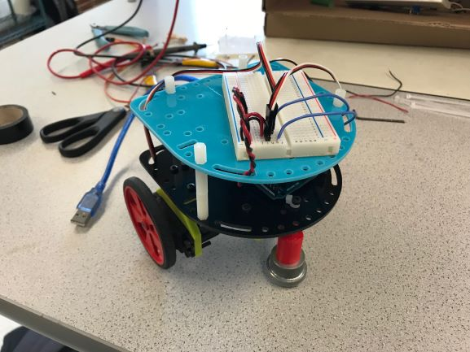
Part 7: Driving your robot autonomously
Using Arduino’s servo.h library, we sent commands to the two continuous rotation servos controlling our left and right wheels. Through testing, we determined that our servos experienced and exponential ramp in speed based on the values we wrote. Noting that the servos on our robot are inverted relative to one another, the commands written to each of them must be opposites when moving forward and backward. To reduce confusion, we wrote some more abstract functions for forward and backward as detailed in robot_drive.ino. In addition, we noticed that the servos still moved when we wrote a value of 90 using the servo library, we added a stop to our code so we could fine tune the calibration potentiometer on each servo. By the end of this lab we had our robot autonomously moving forward, backward, and stopping.
This lab allows us to begin tone detection using an amplifier and microphone.
Materials
1 Arduino Uno
1 Electret Microphone
Various Resistors
Various Capacitiors
LM358 Operational Amplifier
1 Microphone
Source Code
The code written for this lab can be found here: Lab 2 Code Files
Part 1: FFT Analysis for Audio
In order to detect when a 950Hz tone is played and start our robot for the competiton, it may be necessary to utilize a fast fourier transform (FFT) to determine the exact frequencies of audio being played. This allows our robot to discern from different frequencies and only start when 950Hz is played rather than any other frequencies.
To begin, we setup the Open Music Labs FFT library in the Arduino IDE and read one of the example programs. We determined that the program, as written, placed the magnitude of each frequency into 128 different bins and each bin corresponded to a range of frequencies. By default, the FFT utilizes a prescalar of 32 which places 950Hz in a bin near 0Hz (DC offset) which made it difficult to discern. We changed the prescalar as seen in the code below to 128 to move 950Hz to a higher bin value farther from bins 0,1,2, and 3. After that, we added a for loop to print every bin magnitude to serial for easier debugging and reading.
//Modified in setup code
ADCSRA = 0xe7; // changed prescaler from 32 to 128
//Modified in loop
Serial.println("FFT Begin");
String out = "";
for (byte i = 0 ; i < 128; i++) {
Serial.println(out + fft_log_out[i] + " Bin:" +i); //send out data to serial
}
We were easily able to use this serial data to visualize the fft as shown here:
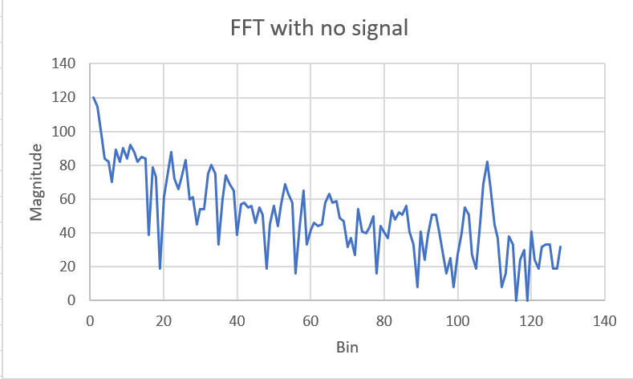
After setting up the code, we built a basic microphone circuit as shown below to hook up the output to the Arduino's A0 pin for the FFT.
We quickly realized that the magnitude values from the FFT were too low to discern the 950Hz tone we played with our phones due to the extremely low voltage produced by the microphone. Without amplification, the microphone only put out about 50mVpp which was too close to the noise floor. We determined that we needed a high gain op-amp circuit to detect the signal correctly.
Part 2: Amplifier and Filter Circuits for FFT
To amplify the voltage from the microphone we decided to use a basic inverting op-amp topology as shown below. This allowed us to easily bias the non-inverting input at Vdd/2 (2.5V) so the output had a DC offset of 2.5V so there was room for the AC signal to swing positive and negative within 0 to 5V without clipping.
We had a bit of trouble getting the circuit working initially since we didn't use enough gain and some of the lab op-amps were not working. Through some trial and error we determined the appropriate component values as shown in the schematic to get a decent signal to noise ratio (SNR) for the FFT. We utilized the oscilloscopes FFT function to quickly debug our circuit. Our working op-amp circuit without filtering is shown below.
When we tested our circuit with the Arduino, we determined that the FFT detected too many background noise frequencies. To solve this problem, we designed a basic cascaded RC circuit (low pass and high pass) to create a basic bandpass filter. The component values were determined for high pass at 900Hz and low pass at 1000Hz but the values were slightly modified based on available components and tweaking the filter to further reject outside frequencies.
As seen by the below data, the band pass filter significantly improved our FFT reliability around 950Hz.
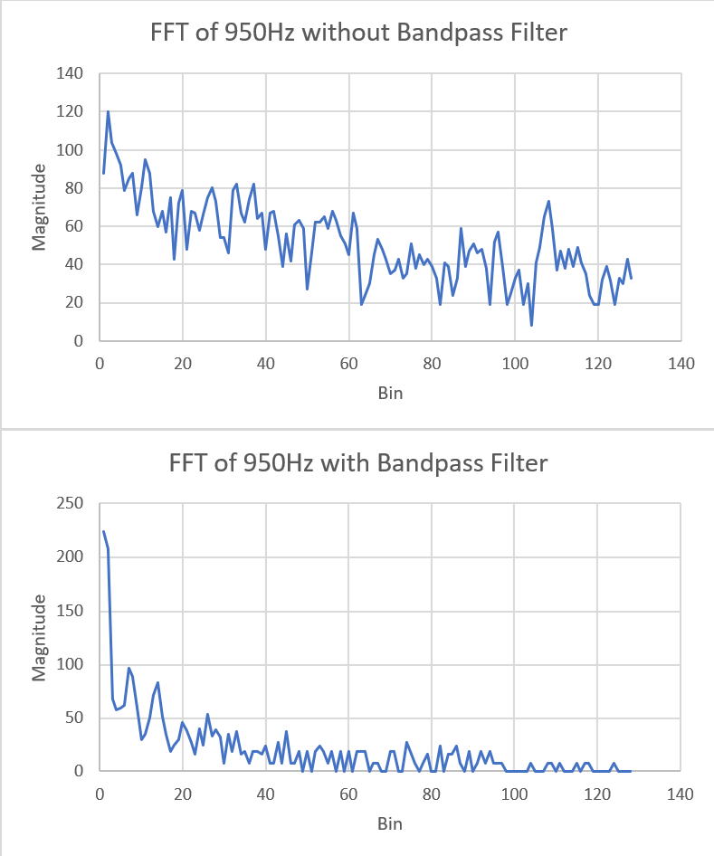
Part 3: Distinguishing the 950Hz tone
By combining our FFT code, microphone, amplifier and filter circuit we could now reliably detect the 950Hz tone. This required a slight addition to our code (shown below) to turn an LED on when our threshold magnitude for the 6th bin was exceeded.
if (fft_log_out[6] > 140){ //Turn LED on when bin 6 has a high enough magnitude - about 950Hz
digitalWrite(7,HIGH);
}
As seen in the video, when performing a basic frequency sweep with background noise, our circuit turns the LED on when the frequency played is approximately around 950Hz.
Part 4: Additional Circuit - Schmitt Trigger
It may not be feasible to use the FFT during the competition since we may run out of analog pins and space for code. To remove the need for an FFT and an analog pin we can route the output of our filter circuit into a Schmitt Trigger which will change state only when the voltage amplitude reaches a certain threshold due to the 950Hz tone. The output of the Schmitt trigger will then be around logic level low or high, telling the arduino via a digital pin when the tone is detected. The schematic for the Schmitt trigger we designed is shown below.
For the design of our Schmitt trigger we referenced a design from How To Mechatronics in an article called How to Schmitt Trigger | How It Works written by Dejan. As can be seen from the calculation diagram, when we desire a 5V output, our input signal must first hover above a 3.33V threshold. When we desire a 0V output, our input signal must then stay below a 1.66V threshold.
Our circuit is shown below and was tested as seen by inputing a sine wave and observing a square wave output which is expected. This is since the since wave oscillates about the 2 threshold voltages of the trigger causing the output to flip back and forth generating a square wave.
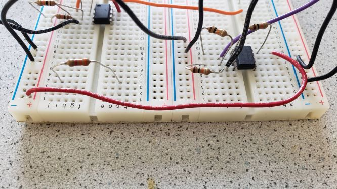
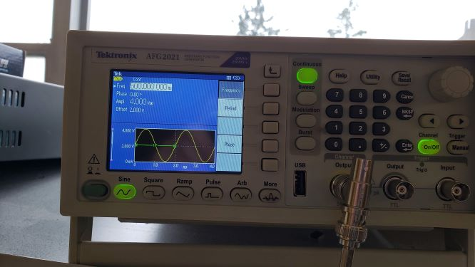
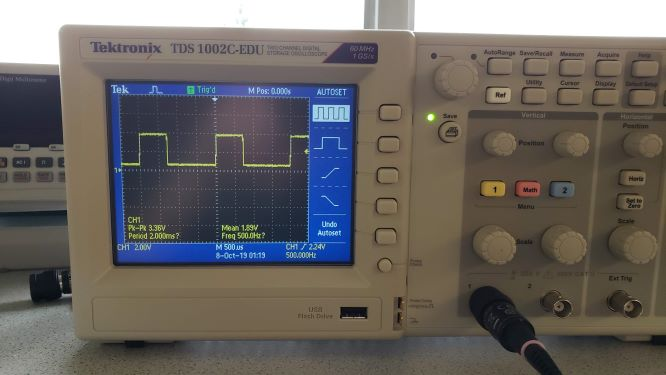
Lab 3
FPGA Video Controller
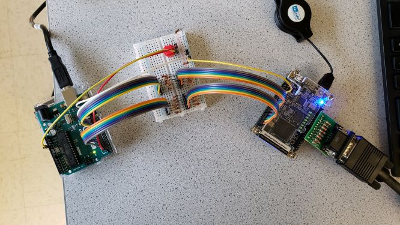
Objectives
This lab requires us to create a VGA video controller with an FPGA, which is controlled by communicating with an Arduino Uno.
Materials
1 Arduino Uno
1 DE0-Nano FPGA Development Board
Various Resistors
VGA DAC circuit board
VGA cable
VGA connector
Source Code
The code written for this lab can be found here: Lab 3 Code Files
VGA DAC
A basic resistor DAC is utilized to create various colors for a VGA video input. The DAC takes 8 bits as input and splits this between red, green, and blue. 3 bits are used for red and green each while blue only gets 2 bits. The resistors are chosen such that there are 8 different voltages from 0 to 1V for red and green, and 4 different voltages for blue. The resistors used for red and green are 270Ω, 560Ω, 1.2KΩ. The resistors used for blue are 270Ω and 560Ω.
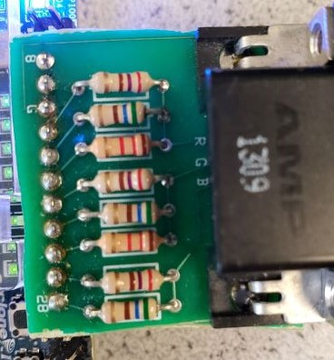
VGA Video Controller and Memory System
Overview
For the purposes of the video display, we decided that we would only use several colors (on the order of 10), and a display size of 270 x 270. This meant that we only really need 4-bit color resolution. On the top level, this 4-bit color “code” is translated into actual 8-bit colors to be displayed by the VGA driver. In the lab, we have several key modules. The image processor will take input data from the Arduino, parse them, and then output to the M9K RAM. The VGA driver, which remains largely unchanged, reads from memory and displays the corresponding images. To accomplish this, we need to have several clocks, which we configure the PLLs for. Instantiation is handled by QSYS/ IP wizards for these.
M9K RAM
One of the key elements of the lab involves the storage of pixel data. Specifically, in a 270 x 270 display, we seek to store 4 bits of data per pixel. This means that in total we need to store 72900 “elements” with 4 bits of data which as calculated is about 291,600 kilobits. To do this, we instantiate M9K dual-port memory blocks (9216 bits, hence M9K). The M9K block template itself is modified slightly to accommodate the 4-bit colors, as well as slightly different addressing.
Image Processor
Originally, we began the lab by creating a template for an “individual” grid. This proved difficult, and while it certainly is possible to implement, in the short term we have decided that we will not draw the 9x9 grid using said template. Instead, we implement “hard-coded” logic that loops through the entirety of the M9K RAM, writing an overall 9x9 grid template. This solution is acceptable, in the sense that given the parallel nature of communications (so far), we can very quickly display received data and redraw the grid.
That being said, the previously mentioned template might be worth exploring as it could potentially simplify the logic required to translate the input from Arduino into the displayed output. We will look into this as we move forward.
The code snippet below shows how we draw the grid by looping through the M9K RAM, as explained above.
always @ (posedge CLK) begin
if (init == 1'b1) begin
if(VGA_PIXEL_X<`SCREEN_WIDTH) begin
VGA_PIXEL_X <= VGA_PIXEL_X+10'd1; //Increment X pixel
end
else if(VGA_PIXEL_Y<`SCREEN_HEIGHT) begin
VGA_PIXEL_X <= 10'd0; //Reset X pixel
VGA_PIXEL_Y <= VGA_PIXEL_Y + 1; //Increment Y pixel
end
else begin
VGA_PIXEL_X <= 10'd0; //Reset to origin
VGA_PIXEL_Y <= 10'd0;
end
if((VGA_PIXEL_X+1) % 30 == 0 || (VGA_PIXEL_Y+1) % 30 == 0) begin
PIXEL_OUT <= `WHITE; //Draw white for the grid
end
else begin
if(ARDUINO_IN[0]) begin
PIXEL_OUT <= `RED; //Draw background color
end
else begin
PIXEL_OUT <= 4'b011;
end
end
end
end
The picture below demonstrates the resulting grid that we drew:
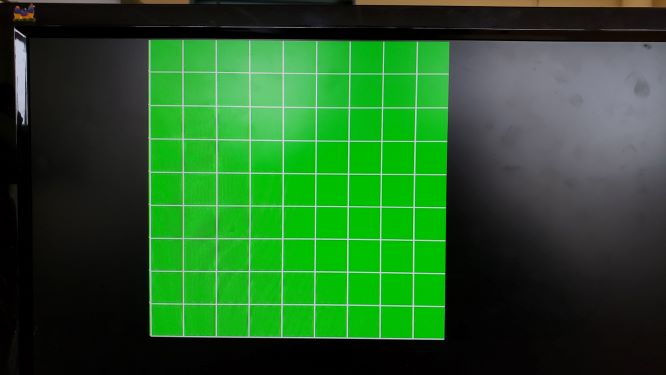
Communications Between Arduino and FPGA
To communicate between the Arduino and the FPGA, we utilize parallel communication, which is that we send 12 bits of data from the Arduino by setting 12 pins to their respective bit value and the FPGA reads these bit values as a 12 bit value with 12 GPIO pins. This is then broken up into three 4-bit values, the first for X position, the second for Y position, and third for which walls are present. Since the Arduino uses 5V logic and the FPGA uses 3.3V logic, we needed to step the voltage down using the voltage divider network shown below. The second resistor is 1.8K and the first is 1K which results in 5V being converted to 3.2V (5V*1.8K/(1K+1.8K)=3.2) which is above the logic level high voltage of the FPGA.
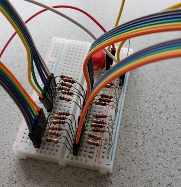
Since this uses almost all of our digital I/O pins, for the next lab, we will need to use an alternative method that uses less pins such as sending 2 6-bit values or using a shift register to convert serial data to parallel.
As seen in the code snippet below, we take the data input from the arduino via the FPGA GPIO pins under GPIO_1. All of the GPIO_1 pins are declared as inputs for simplicity. We then concatenate the data on these pins as a 12 bit wire. This is connected to ARDUINO_IN which is then broken up into wires POS_X, POS_Y, and WALLS which are going to be used as mentioned before.
//Code within top level file
input [33:0] GPIO_1_D;
IMAGE_PROCESSOR proc(
.ARDUINO_IN({GPIO_1_D[21],GPIO_1_D[19],
GPIO_1_D[17],GPIO_1_D[15],GPIO_1_D[13],
GPIO_1_D[11],GPIO_1_D[9],GPIO_1_D[7],
GPIO_1_D[5],GPIO_1_D[3],GPIO_1_D[1],GPIO_1_D[0]}),
.PIXEL_OUT(pixel_data_RGB332),
.CLK(PLL_50),
.VGA_PIXEL_X(X_ADDR),
.VGA_PIXEL_Y(Y_ADDR)
);
//Code within IMAGE_PROCESSOR module
input wire [11:0] ARDUINO_IN;
wire POS_X;
wire POS_Y;
wire WALLS;
assign POS_X = ARDUINO_IN[3:0];
assign POS_Y = ARDUINO_IN[7:4];
assign WALLS = ARDUINO_IN[11:8];
//Utilized within IMAGE_PROCESSOR to change the background color
if(ARDUINO_IN[0]) begin
PIXEL_OUT <= `RED;
end
else begin
PIXEL_OUT <= 4'b011;
end
For this lab, we make the Arduino toggle the bit connected to the GPIO pin connected to ARDUINO_IN[0] by having the user press a button. This results in communication between the Arduino and FPGA, which causes the background color of the grid to change between red and green. This can be seen in the below video. (Flashing in the video is due to not debouncing the button on the arduino.)
Lab 4
Final Integration and Radio Communication
Objective
In this lab we will finish preparing the robot for the final competition. This means we need to finalize the navigation algorithm for the robot such that it will traverse a maze without hitting any walls or colliding into other robots, and that it will successfully map out the entire maze and demonstrate it on a display monitor.This means we should also ensure a correctly implemented protocal for the robot to send maze-mapping information to the base station Arduino so that the maze can be displayed visually.
Maze Information & Wireless Communication
Storing Maze Data
To keep track of maze information, we use global x and y positions, a global direction variable and a 9 x 9 array of node structs which each contains the following information regarding individual nodes: (1) walls detected in the form of 4 directions (2) node visited status (3) node cleared status. (2) indicates whether or not a node has been visited, while (3) indicates if all possible paths have been taken for a certain node. As the code below shows, the data structure for the maze is quite efficient in the sense that we may quickly repurpose collected DFS information to be sent back to the base station for testing, as both use this same data structure. Using array and struct also means it's quick and intuitive to access and modify relevant information.
We send 16 bits of data per packet from the robot to our base station with an nRF24 wireless chip. This chip is connected to the arduino via SPI. At each intersection our robot sends its current position and the walls it sees to the base station. The base station constantly polls for data in order to receive each packet. Since our robot maintains a global compass in order to know it’s absolute position, we can convert the relative position of the walls to a global “North, East, South, West” direction before sending the data so the base station doesn’t need to keep track of the robots orientation.
Data Encoding (Wireless Packets)
The first 4 bits of our data starting from the LSB contain the x position (0 to 8), the second 4 bits contain the y position (0 to 8), and the third 4 bits contain the wall information. For these 4 wall bits, the LSB of the 4 bits encodes if a west wall is seen, the 2nd encodes a south wall, the 3rd an east wall, and the MSB (4th) encodes a north wall. The last 4 bits of our 16 bit packet are unused and were left in case we needed to send more data.
data = (walls<<8)|(ypos<<4)|(xpos);
radio.startWrite(&data, sizeof(unsigned int));
To decode the 16 bits to our various pins, we utilize bit masking to retrieve the data and send the data out with digitalWrite. This can be seen below.
Since our FPGA code utilizes a one hot encoding for walls for simplicity, the Arduino decodes each wall seen into a separate data transmission to the FPGA so each wall is drawn correctly (shown below).
We communicate to our FPGA with a parallel communication system. The 12 bits described above each have a dedicated pin on the Arduino and FPGA for sending and receiving the data. To simplify our FPGA code, we utilize wires which decode the 13 bit bus into a 4 bit POS_X wire, 4 bit POS_Y wire, 4 bit WALLS wire, and 1 bit UPDATE wire.There is also a 13th pin which is our update pin. We toggle this high and then immediately low after all of our data is written to the parallel “bus” in order for the FPGA to read the data and update the display.
Wall Drawing
After the Arduino sends an update bit, the FPGA sets an internal update flag to high and performs some checks to make sure it isn’t currently updating and if it isn’t updating the screen, then starts updating. Within this block, a different case executes depending on the side the wall is on. Our cases calculate the correct start and stop position to draw a wall on the display as shown below based on the x and y position. The FPGA will then increment the x or y position (depending on the wall side) during each clock cycle and draws a red pixel. Once the final position is reached the updating flag is set to 0 and the internal variables are reset for the next wall to be drawn.
if(updating) begin //wall writing code here
case(WALLS)
//North Wall
4'b1000: begin
VGA_PIXEL_Y <= (POS_Y+1)*30-15;
if(xpos==10'd0) begin
VGA_PIXEL_X <= (POS_X+1)*30-15;
xpos <= (POS_X+1)*30+15;
end
else if(VGA_PIXEL_X<xpos) begin
VGA_PIXEL_X <= VGA_PIXEL_X+1;
end
else begin
xpos <=10'd0;
updating <= 0;
end
end
//case continues with other 3 wall orientations
Below is a successful example of maze mapping and its drawing. We use green lines to represent the walls.
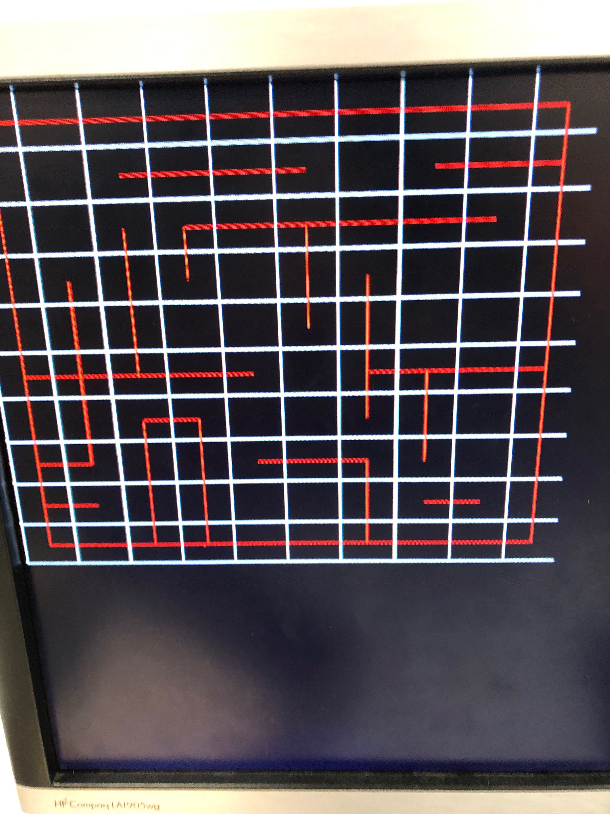
Navigation & Robot Avoidance
Search Algorithm
Largely, our maze search algorithm for the final competition remained the same as Milestone 3, but with the inclusion of a few additional features. For our final integration, we fine-tuned our line following to be more consistent by ensuring that values were being written to both servos in each scenario. We also further debugged some of our movement functions (turns and pivots) which had some bugs. Additionally, we optimized our maze search to prioritize the south and west directions to better our chances of avoiding robots early on. Lastly, by using a global counter of nodes that have yet to be completely explored, we were able to determine immediately when we have mapped out every node. This counter was incremented when visiting new nodes and decremented when we determined that a node was completely explored. This was originally utilized to turn the green light on when mapping completed rather than when we returned to start but we found that our code had some edge cases where the light turned on too early so we disabled it for the competition.
Attached on 5” high on each side of our robot is an IR LED emitting 940nm light. These IR emitters are used to signal to other robots of our presence. In order to avoid other robots, we wired up a QSD123 IR phototransistor in a common collector configuration. When a robot in front comes in close proximity to our sensor, the output voltage increases. When we line follow to another intersection and our sensor gets triggered, our code enters a loop where our robot pivots 180° to the right and then turns back to check if the robot has left. To minimize error, our robot relies on delays to prevent it from checking line sensor values until it is approximately in the right region to exit the loop, as well as an “opposite” reversal to reduce the build up of error. The robot is designed to continue doing this until the robot in front has moved away. By doing this, we are able to prevent any crashes and continue mapping accurately. Additionally, to prevent a mis-read of another robot as a “wall”, we have tuned our sensor threshold such that we are always able to detect a robot at a “close-wall distance”. This allows us to first check for other robots in front of us when updating walls. We have an exception case that therefore prevents the front wall value from being updated in the case of a robot seen in front.
The code snippet below corresponds to the process outlined above. It's using a while loop and a conditional flag to interrupt line-following and resumes only when other robots are not detected.
We are also aware of the issue of the IR scattering within “alleys” in a maze, even with the black tape attached to the walls. We performed a hardware fix by 3D printing a “hat” that further limits the FOV of the IR receiver. This also has the benefit of isolating our front receiver from the scatter resulting from our own front emitter. In order to further limit the effects, we have applied white tape that also isolates the bottom of the hat from scattering from the ground. This hardware fix has given us generally much better reliability from the receiver.
Videos
This video below shows our robot utilizing our modified DFS algorithm to navigate a maze. It starts after an FFT detects the correct frequency being played. As it navigates the maze, it sends its position and any walls seen to the base station which updates the maze on the VGA display. At one point we place a fake robot into the maze to test and demonstrate robot detection. Our program checks if it sees a robot prior to checking the front wall sensor in order to prevent drawing other robots as walls. At the end of the video, the green led turns on to indicate that the maze was mapped completely.
This video below shows another run with our robot navigating a different maze. This time the robot is started via the button override. Again, you can see the display being updated live and accurately with the maze as it is mapped.
This video below demonstrates our robot’s ability to detect other robots and avoid them. As we can see, the robot senses that there is another robot incoming, and it turns to the opposite direction and back and resumes when it confirms there’s no longer any other robot in its vicinity.
Notes
Our final assembled robot is shown below:
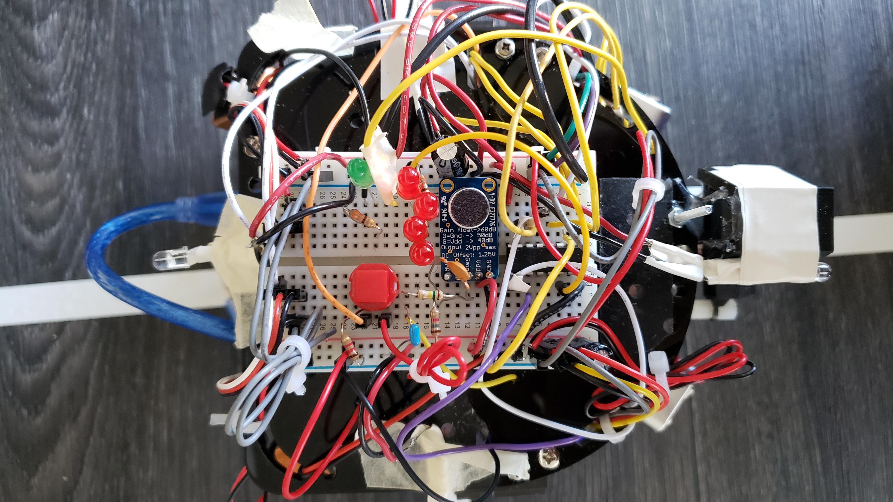
Notably, we put a shield above the front IR sensor to protect it from interference.
As th first video demonstrated, our robot has a working override button, which works simply as a flag being set when the button is HIGH, as shown in the simply code snippet below:
Note that the condition checks for the override button and the musical note. Either one can set off the robot.
As for wall sensing and the nagivation algorithm, they are implemented the same ways as in the previous labs and milestones, with any additional changes explained above.
We also put a green LED to indicate when the robot finishes exploring the maze, shown in the photo below (in addition to the red LEDS we added to indicate robot detection):
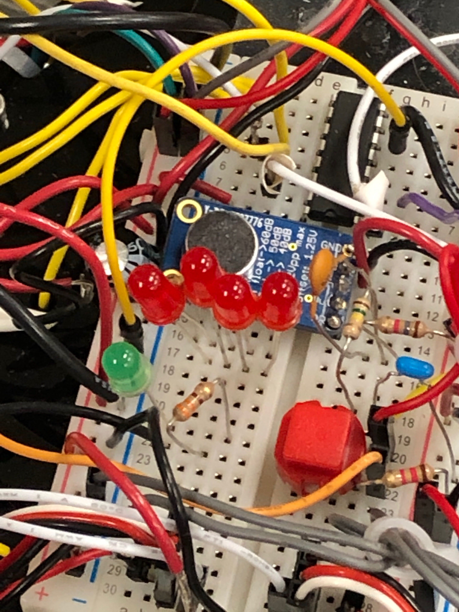
The green LED will turn on to indicate that the maze-mapping process is complete. This is done in the code below:
if (xpos==0 && ypos==0){
if (Maze[xpos][ypos].north && Maze[xpos][ypos].east &&
(recentDirection==2 || recentDirection==3)){
left.detach();
right.detach();
digitalWrite(greenLED,HIGH);
done=1;
return;
}
}
If the robot is back at the origin after backtracking and every other node has been visited, then we know for sure that the maze is completely mapped. The robot is set to stop and the green LED turned on.
Final Notes on Integration
As we neared competition day, our team worked hard to try to increase the reliability of the robot, as well as ironing out existing mobility issues with the robot. Here are instances of fixes that we performed to achieve this final milestone.
Debugged Pivot180. While our previous implementation had been successful in pivoting the robot in a delay-based manner, we realized that our secondary condition to check our line sensors for exit out of the turning sequence was never utilized due to code changes in line sensor checking. We have made the alterations necessary and this has helped in both dead-ends and robot avoidance.
Debugged pdLineFollow. We realized that there were times when the robot would attempt to follow a line, and then subsequently veer off-course after making corrections. After careful debugging, we correctly attributed this to an undefined state where the correction speed would match the speed of the uncorrected wheel, resulting in the robot driving in a straight line off course. We now fully define all our correction speeds and this has improved our robot reliability greatly.
Wall-Sensor Tuning. It was discovered that in long alleyways, our robot tended to struggle with front-wall detection. Many false positives were detected and this resulted in the robot incorrectly mapping the maze/ making inaccurate movement decisions. We fixed this by creating a special threshold that would be used for the front wall sensor when both side wall sensors detected near walls. This harder condition helped to reduce further problems.
Final Notes on Competition
As it would turn out, our final competition performance was not as we had initially expected. During competition day, we experienced technical difficulties. As a lot of our robot’s functionality was based on correct thresholds (line sensors, wall sensors, alley conditions, etc.) we realized the morning of that Duffield atrium represented a significantly different environment than Phillips Lab. We tuned the robot and made adjustments early in the morning calibration period, prior to the sun appearing. When we had ironed out most of the issues, the cloud cover had cleared and despite the shades, the mazes still received a fair amount of exposure. This in part explains why for Round 1, our robot continued to be troubled by a specific segment of wall that was well illuminated by the sun. While we did not have the information to determine if this was a failure to detect an intersection or a failure on the wall sensor’s part, it is clear that our calibrations were somewhat off.
In terms of possible fixes, we should look to do comparisons in line thresholding between the side sensors and the middle sensor, instead of relying solely on hard global thresholds. This would’ve cut down reliability issues significantly.
Milestone 1
Line Following
Goal:
The objective of this milestone is to outfit our robot with the requisite hardware and software components so that it has the ability to autonomously and continuously traverse the grid. At this stage, the grid is simply set up by laying out white tapelines on a black background, without obstacles or other objects. The robot is asked to demonstrate following a straight line as well as moving in a figure of “8”.
Hardware Modifications:
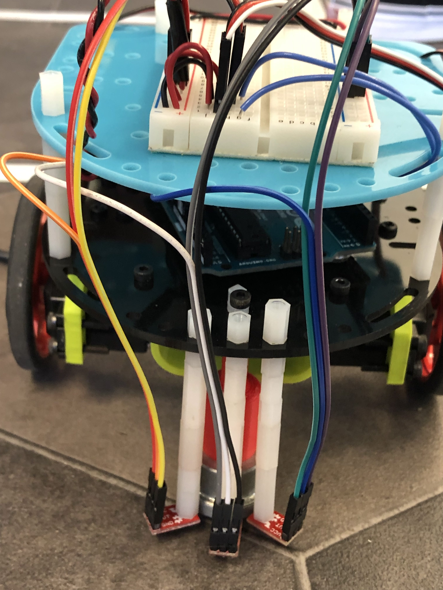
We began the line following process by calibrating our photodiodes, SparkFun QRE1113 Analog Line Sensors. As the photo above shows, we have added three sensors that face down towards the grounds on the front end of the robot. These sensors measure the amount of light reflected off a surface and return numerical readings which can be used to distinguish a dark color from a light color. Each sensor gives slightly different readings, so picking a good threshold for dark vs light color is important. Values below the threshold would represent white grid line, while values above the threshold would represent the ground. We found the optimal threshold value through tuning. We decided on using three sensors so that we can cover both the grid line and the two dark regions on both sides. Using three sensors offers slightly better redundancy, and allows for writing better tracking conditions in the software.
Line Following:
Initially, we had simple conditions for line-following, as shown in the code below. When the center sensor detected a value higher than threshold (i.e. ground), and an opposing side sensor detected a value lower than threshold (tape), the robot had drifted off course and a simple correction mechanism would kick in (i.e. lowering the speed of the offending wheel).
void followLine() {
checkSensors(); //read data from sensors
robotForward();
if (LSL > left_to && LSR < right_to){ // deviates to right
right.write(slow_R); //slow down left wheel
} else if (LSL < left_to && LSR > right_to){
left.write(slow_L); //slow down right wheel
} else robotForward();
}
However, this was not a particularly robust control as it meant that the robot often “ping-ponged” between the sides of the white tape, leading to behavior shown below. This was particularly problematic when making turns, as it lead to unexpected starting angles with a host of complications.
We remedied this by developing a better line following algorithm using the p-element of PID Control. We subtract the current reading from the “full-scale” reading (currently set at 850) and multiply that by a tuning constant and our range of drive values (5), as shown in the code below
void pd_followLine() {
int KD = 0.9;
int tempspeed;
checkSensors();
if (LSR < 400){ // right drifts onto white
int rdiff = (850 - LSL)/850;
int tempspeed = 85+rdiff*KD*5;
right.write(tempspeed);
} else if (LSL < 400) {
int ldiff = (800 - LSL)/800;
int tempspeed = 95-ldiff*KD*5;
left.write(tempspeed);
} else{
leftForward(fast_L);
rightForward(fast_R);
}
}
While the robot moved very smoothly with this scheme, it also moved slowly. Increasing our range of drive values to allow for higher maximum speed was not helpful. Motor speed does not scale linearly over the drive range, meaning that increasing the allowable values to 7 made the robot rather unstable. We solve this issue by activating correction only when the values read in have fallen below an acceptable threshold (400). We hence sacrifice some smoothness for greater sustained speeds. New corrective behavior looks like the following:
Figure Eight Traversal:
With our line-following complete, we were ready to implement the turning mechanism for the figure 8. We first need to come up with a way to check whether the robot has arrived at an intersection of the grid lines. Suppose the robot is moving along a straight line; when the left and right sensors both see white color, it means that the robot is at a spot where another grid line joins the current one, i.e., an intersection. We implemented this as a condition flag:
Similarly we need a way to check if the robot has exited the intersection. This occurs when it sees only a white line, which means that the middle sensor sees white but the two side sensors see black. The implemented function is as below:
int checkLine() {
checkSensors();
if (LSL > left_to && LSM right_to){
return 1;
}
else return 0;
}
Thus, we can easily implement the figure eight function as follows: We frequently check whether the robot is at an intersect. If it is, we make it turn either right or left; it will keep turning until it sees that it's on a single white line again (checkLine() returns 1). From then on it will keep going at a straight line until it arrives at the next intersect, and the process repeats. We can program the robot to do an eight figure by keeping track of the numbers of right turns and left turns in two state variables, in addition to another variable that indicates the currently desired direction, as shown below:
However, we ran into some complications when we tried to make the robot turn. Initially, we allowed the robot to completely stop one of its wheels and pivot on that axis, but that proved rather slow (with the added negative of the robot on occasion getting stuck).
To improve handling, we reversed one of the wheels at a slightly slower speed, which allowed for a much smoother turning cycle. To increase the robustness of turning, we avoided hardcoding most of our values. Our turning mechanism is comprised of overshooting the intersection (by a hard coded value), and then starting the turn. The turn will not complete until the robot has detected the sequence of ground-tape-ground on its sensors, twice (separated by a slight 10ms delay). This made for a robust turning scheme that also affords the robot an “auto-recovery” should it drive off the tape. When it next detects tape it will continue to turn until it has returned to the starting line following configuration. Additionally, this avoids the issue of encountering false positives which might conclude a turn prematurely.
Conclusion:
Our robot is now able to autonomously follow a straight line without deviating and to continuously traverse a figure
“8”. It is able to detect an intersection and turn left or right smoothly. Additionally, if it finds itself slightly off
the grid, it is able to self-correct and steer itself back onto the proper course. Thus, the objectives of Milestone 1
are successfully accomplished. Moving forward, we are looking to improve the implementations of these functions by using
Interrupt Service Routines, which are better at handling periodic autonomous tasks in a systematic fashion.
The objective of this milestone builds upon the functionality of Milestone 1, Line Following. Our goal here is to improve our robot’s ability to traverse the maze. Via IR distance sensors we can calculate the distance between our robot and the surrounding walls. With this, our robot becomes equipped with the necessary information to avoid wall collisions and make intelligent turns.
Hardware Modifications
To perform wall detection sufficient enough for quickly moving through the maze and avoiding walls, we required at least two IR distance sensors. Our sensor of choice is a Sharp GP2Y00A41SK0F short range distance sensor capable of determining distances between 4-30 cm by emitting and receiving an IR signal. Considering that every intersection within the maze is either composed of straight paths or corners, we placed one sensor in front of our robot and one to its right. Additionally we added a third sensor to the back, but we found it unnecessary for the requirements of this milestone. The front sensor primarily detects walls in front before a collision happens and the right sensor determines whether or not we can take a turn.
Additionally, it is important to note that each wall has a height of 18.5 cm. For accurate distance measurements, we chose to place our distance sensor in the middle layer of our chassis, about 8.5 cm above the floor. Placing the sensors too high could potentially result in poor detection and bounce back by the distance sensors.
As a result of the additional sensors that we mounted, we quickly ran out of analog pins. Hence, we implemented a basic dual-purpose DAC (capable of digital and analog). The TI CD4051BE 8-Channel Analog Multiplexer/Demultiplexer With Logic-Level Conversion uses a common signal pin that is shared between 8 poles. Control is provided by a 3-bit signal, which we wire to digital outputs. We can now poll between our sensors and free up a significant number of analog pins.
Other minor changes include introducing two new LEDs indicating what wall the robot has detected.
Maze Traversal & Wall Detection:
Now that we have installed distance sensors on the front, right, and back, we will use their readings to devise an algorithm for avoiding collision with the maze walls. First, we wrote a function that reads the necessary data from the distance, as shown below. Admittedly the back sensor’s data eventually became obsolete, since we found it sufficient to only use the front and right sensors for wall detection. By the next milestone we tentatively plan to discard the back sensor and install a left sensor.
Now we write the function for wall detection, as shown below. Given the available data, we basically have four scenarios: (1) no walls at either front or back; (2) wall at right but not front; (3) wall at front but not right; (4) walls at both front and right. In case (1), the robot just goes straight forward. In case (2), the robot will also go straight forward, with the corresponding LED lighting up to indicate right wall detection. In case (3), the robot turns right and the LED lights up to indicate front wall detection. In case (4), the robot will turn left with both LEDs turned on to indicate the presence of both front and right walls. Note that we only check for walls at intersections.
void checkWall() {
checkDistSensors();
//wall on right, no wall in front
if ((distRight < distHigh && distRight > distLow) &&
(distFront > distHigh || distFront < distLow)) {
// go straight
digitalWrite(ledPin_right, HIGH);
pd_followLine();
digitalWrite(ledPin_right, LOW);
}
// wall on right and in front
else if ((distRight < distHigh && distRight > distLow) &&
(distFront < distHigh && distFront > distLow)) {
//rotate left 90
digitalWrite(ledPin_front, HIGH);
digitalWrite(ledPin_right, HIGH);
turnLeft();
digitalWrite(ledPin_front, LOW);
digitalWrite(ledPin_right, LOW);
}
//no wall on right and wall in front
else if ((distRight > distHigh || distRight < distLow) &&
distFront < distHigh && distFront > distLow){
//take a right turn
digitalWrite(ledPin_front, HIGH);
turnRight();
digitalWrite(ledPin_front, LOW);
}
// no wall on right, no wall in front
else{
//go forward
pd_followLine();
}
}
The videos below show the performance of our robot in two different mazes:
Testing and Debugging:
The process for traversing the maze took several tries to do correctly. Our issues ranged anywhere from crashing into walls, not properly calling our pd_followLine() follow function after turns, and the failure to pivot within dead ends. To assist with understanding the robot’s decision making, we used our two LEDs on top to indicate wall detection. Our green LED lights up to indicate when our front distance sensor detects a wall in front and the yellow LED lights up to indicate a wall to our right.
In this milestone, we aim to equip the robot with a full-fledged path finding algorithm that enables it to fully explore any arbitrarily configured maze autonomously. We also equip the robot with the necessary sensors and software to enable it to detect other robots in the maze, in order to avoid collisions and make real-time intelligent decisions.
Hardware Modifications
We made two major changes to the robot's hardwares in this milestone. First, we installed an IR sensor on each of the robot's four sides. The role of an IR sensor is to detect any incoming robot, so that during maze exploration our robot will avoid collision with others. The reading value that an IR sensor returns, if it exceeds about 700, will indicate the close presence of another robot. This threshold value, however, would often fluctuate during practice. To minimize the background noise caused by ambient lighting and other reflective surfaces, we put shieldings on top of each sensor. As seen in the photo below, we put a large white plastic shielding on top of the front IR sensor.
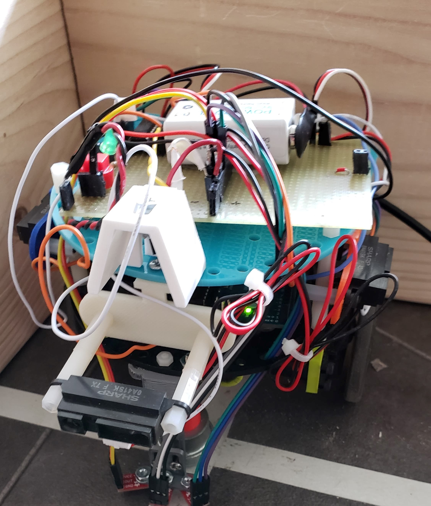
Second, we changed the servos and installed battery packs as shown below. This greatly increases the speed of our robot, making it go much faster and complete the maze exploration under much shorter time.
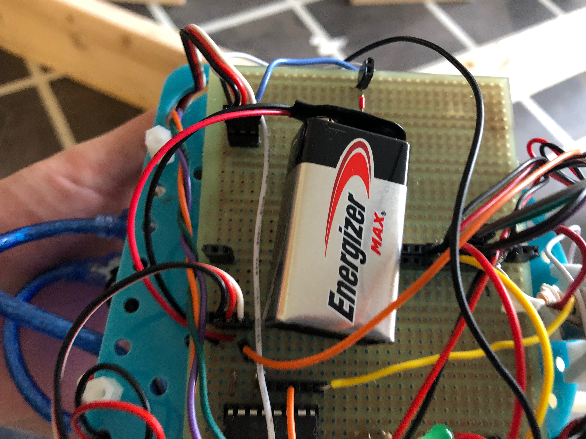
Robot Detection
The robot is programmed to avoid other robots as it explores the maze. As the video below demonstrates, it is capable of sensing other robots' approach and then reacting accordingly.
The robot detects other robots by checking the IR sensors' readings, as seen in the code snippet below. If the readings exceed a certain threhold, it indicates the presence of an incoming robot, and our robot will make appropriate movement changes to avoid collision.
We have tried multiple different approaches and different versions of path-finding algorithms. As seen in our Github repo there are multiple folders under Milestone 3, but the final algorithm that we decided on is a simplfied DFS algorithm, which can be found in the file "Final_Integration".
In the algorithm, we first define a data structure that stores necessary information on each node we will visit, as shown in the code snippet below:
We represent the maze as a 2D matrix of these nodes, or intersections. We implement the robot's maze exploration by having it stop at each intersection/node. At each stop, the algorithm takes two steps: first, it decides where the robot must go next, second, it makes the robot move there.
The first step, decision-making, is accomplished by calling the function called directionPick(). As seen in the code snippet below, the function first checks for walls by analyzing the readings from the wall sensors, and updates the relevant variables to store this information. It will then see if any neighboring node/intersection hasn't been visited yet. If not, then the function returns the direction toward it. If all four neighbors have been visited, then the function returns the opposite direction to the current one, so that the robot can turn around and backtrack. Note that the function will also check whether the robot is at the boundary of the maze, so that it will not attempt to go off the map.
int directionPick(){
// As the robot makes decisions, slow its speed.
left.write(91);
right.write(89);
int nextMove = 0;
checkWall();
// Check sensors and see which neighbors are available.
if(!Maze[xpos][ypos].visited){
switch(Maze[xpos][ypos].direction)
{
case North:
Maze[xpos][ypos].east = wallRight;
Maze[xpos][ypos].west = wallLeft;
Maze[xpos][ypos].north = wallForward;
Maze[xpos][ypos].south = 1;
break;
case East:
Maze[xpos][ypos].east = wallForward;
Maze[xpos][ypos].west = 1;
Maze[xpos][ypos].north = wallLeft;
Maze[xpos][ypos].south = wallRight;
break;
case West:
Maze[xpos][ypos].east = 1;
Maze[xpos][ypos].west = wallForward;
Maze[xpos][ypos].north = wallRight;
Maze[xpos][ypos].south = wallLeft;
break;
case South:
Maze[xpos][ypos].east = wallLeft;
Maze[xpos][ypos].west = wallRight;
Maze[xpos][ypos].north = 1;
Maze[xpos][ypos].south = wallForward;
break;
}
}
// Checks nearby node for paths to take. Prevents useless looping.
if (xpos-1 >=0){
if (Maze[xpos-1][ypos].east) Maze[xpos][ypos].west =1;
} if (xpos+1 <= 8){
if (Maze[xpos+1][ypos].west) Maze[xpos][ypos].east =1;
} if (ypos+1 <= 8){
if (Maze[xpos][ypos+1].south) Maze[xpos][ypos].north =1;
} if (ypos-1 >= 0){
if (Maze[xpos][ypos-1].north) Maze[xpos][ypos].south =1;
}
Maze[xpos][ypos].visited = 1;
if(Maze[xpos][ypos].north==0){
nextMove = North;
Maze[xpos][ypos].north=1;
} else if(Maze[xpos][ypos].east==0){
nextMove = East;
Maze[xpos][ypos].east=1;
} else if(Maze[xpos][ypos].west==0){
nextMove = West;
Maze[xpos][ypos].west =1;
} else if(Maze[xpos][ypos].south==0){
nextMove = South;
Maze[xpos][ypos].south =1;
} else{
nextMove = (Maze[xpos][ypos].direction + 2)%4;
}
return nextMove;
}
The second step, moving the robot to the decided next node, is accomplished by calling the function moveToNearbyNode(nextDirection). As shown in the code snippet below, this function compares the current direction with the destination direction. If they are the same, then the robot will go straight ahead and follow the line. If they differ by 90 degrees, then the robot will pivot either left or right, depending on whether the 90 degrees difference is counter-clockwise or clockwise. If the directions are angled at 180 degrees, then the robot will accordingly pivot 180 degrees. The function will also update the relevant global variables to keep track of this information.
void moveToNearbyNode(int direction){
intersectFlag = 0;
int diff = abs(direction - Maze[xpos][ypos].recentdir);
if (diff == 0){
int counter = 0;
while (counter < 50){
pd_followLine();
counter +=1;
}
}
else if (diff == 2){
pivot180();
}
else if (Maze[xpos][ypos].recentdir == (direction+1)%4){
pivotLeft();
}
else if ((Maze[xpos][ypos].recentdir+1)%4 == direction){
pivotRight();
}
switch(direction){
case North:
ypos++;
Maze[xpos][ypos].south = 1;
break;
case East:
xpos++;
Maze[xpos][ypos].west = 1;
break;
case West:
xpos--;
Maze[xpos][ypos].east = 1;
break;
case South:
ypos--;
Maze[xpos][ypos].north = 1;
break;
}
if (!Maze[xpos][ypos].visited) {
Maze[xpos][ypos].direction = direction;
}
Maze[xpos][ypos].recentdir = direction;
// Move to next intersection
while(!intersectFlag){
pd_followLine();
checkIntersect();
}
left.write(91);
right.write(89);
}
We demonstrate our robot's maze exploration capability in three different maze configurations, as shown in the videos below:
Milestone 4
Radio Communication
Goal
For this milestone, we need to implement a successful radio communication protocol between two Arduinos. One Arduino will be the robot, while the other one is a base station connected to the FPGA. The robot should be able to transmit maze-mapping data to base station, which will then decode it and visualize it through FPGA and a display monitor. In addition to the radio communication, the robot must also be able to detect and avoid other robots.
Wireless Communication
We send 16 bits of data per packet from the robot to our base station with an nRF24 wireless chip. This chip is connected to the arduino via SPI. At each intersection our robot sends its current position and the walls it sees to the base station. The base station constantly polls for data in order to receive each packet. Since our robot maintains a global compass in order to know it’s absolute position, we can convert the relative position of the walls to a global “North, East, South, West” direction before sending the data so the base station doesn’t need to keep track of the robots orientation.
As said above, we used 16 bits to encode the information we transmit. The first 4 bits of our data starting from the LSB contain the x position (0 to 8), the second 4 bits contain the y position (0 to 8), and the third 4 bits contain the wall information. For these 4 wall bits, the LSB of the 4 bits encodes if a west wall is seen, the 2nd encodes a south wall, the 3rd an east wall, and the MSB (4th) encodes a north wall. The last 4 bits of our 16 bit packet are unused and were left in case we needed to send more data. The code below shows how we transmit the data.
data = (walls<<8)|(ypos<<4)|(xpos);
radio.startWrite(&data, sizeof(unsigned int));
To decode the 16 bits to our various pins, we utilize bit masking to retrieve the data and send the data out with digitalWrite. This can be seen in the code below:
Since our FPGA code utilizes a one hot encoding for walls for simplicity, the Arduino decodes each wall seen into a separate data transmission to the FPGA so each wall is drawn correctly (shown below).
We communicate to our FPGA with a parallel communication system. As mentioned above, we send 16 bits of data from the robot to the base station, and only the first 12 bits are used. These 12 bits described above each have a dedicated pin on the Arduino and FPGA for sending and receiving the data. To simplify our FPGA code, we utilize wires which decode the 13 bit bus into a 4 bit POS_X wire, 4 bit POS_Y wire, 4 bit WALLS wire, and 1 bit UPDATE wire.There is also a 13th pin which is our update pin. We toggle this high and then immediately low after all of our data is written to the parallel “bus” in order for the FPGA to read the data and update the display.
Our base-station setup is shown in the photo below:
After the Arduino sends an update bit, the FPGA sets an internal update flag to high and performs some checks to make sure it isn’t currently updating and if it isn’t updating the screen, then starts updating. Within this block, a different case executes depending on the side the wall is on. Our cases calculate the correct start and stop position to draw a wall on the display as shown below based on the x and y position. The FPGA will then increment the x or y position (depending on the wall side) during each clock cycle and draws a red pixel. Once the final position is reached the updating flag is set to 0 and the internal variables are reset for the next wall to be drawn. The code below shows how to do this.
if(updating) begin //wall writing code here
case(WALLS)
//North Wall
4'b1000: begin
VGA_PIXEL_Y <= (POS_Y+1)*30-15;
if(xpos==10'd0) begin
VGA_PIXEL_X <= (POS_X+1)*30-15;
xpos <= (POS_X+1)*30+15;
end
else if(VGA_PIXEL_X<xpos) begin
VGA_PIXEL_X <= VGA_PIXEL_X+1;
end
else begin
xpos <=10'd0;
updating <= 0;
end
end
//case continues with other 3 wall orientations
To demonstrate that the display works correctly, we send test data packets from the robot Arduino. The base station should be able to decode them correctly and the display monitor will show the examples that we want to draw. The photo below is an example of how we successfully tested our setup's ability to correctly draw the shapes we want.
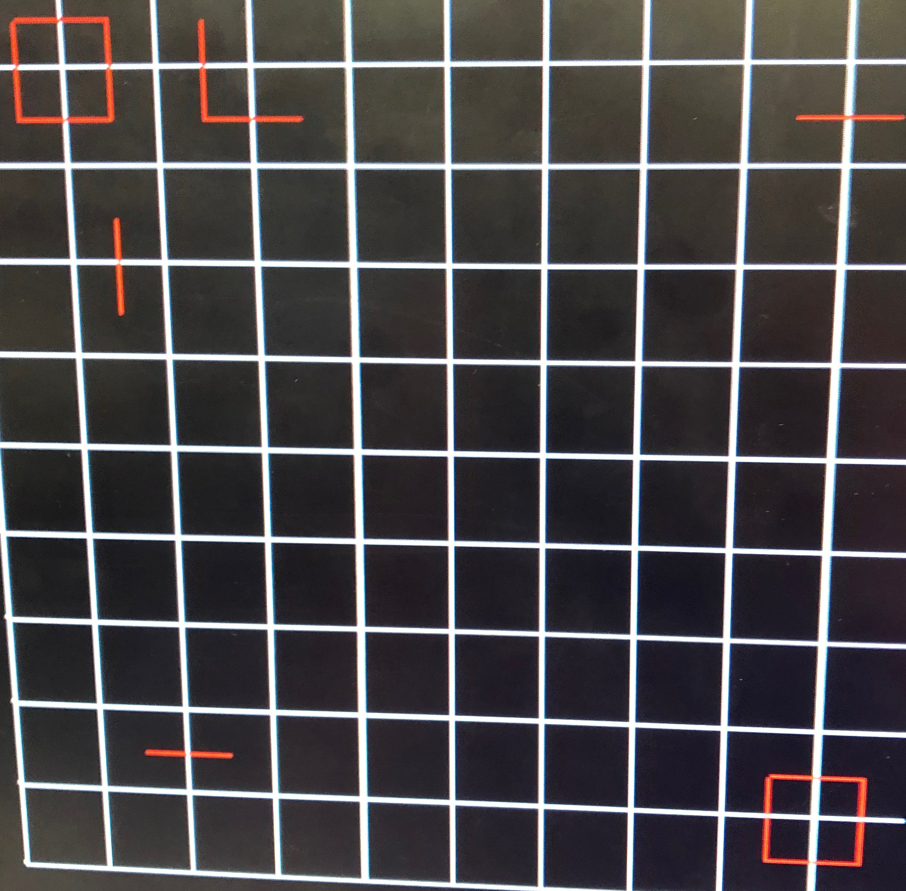
Below is an example maze that the robot fully and correctly explored and mapped. As we can see the display works correcly as it should.
Attached on 5” high on each side of our robot is an IR LED emitting 940nm light. These IR emitters are used to signal to other robots of our presence. In order to avoid other robots, we wired up a QSD123 IR phototransistor in a common collector configuration. When a robot in front comes in close proximity to our sensor, the output voltage increases. Thus we can detect another robot by reading the IR semsor value and check whether it exceeds a certain threshold.
The robot detection algorithm works as follows: when we line follow to another intersection and our sensor gets triggered, our code enters a loop where our robot pivots 180° to the right and then turns back to check if the robot has left. To minimize error, our robot relies on delays to prevent it from checking line sensor values until it is approximately in the right region to exit the loop, as well as an “opposite” reversal to reduce the build up of error. The robot is designed to continue doing this until the robot in front has moved away. By doing this, we are able to prevent any crashes and continue mapping accurately. The code below shows how we do this:
In the code snippet, the while loop lets the robot continuously follow the line and constantly check its sensor for any nearby robot. If there is one, then it will pivot 180 degrees back and forth,until it "sees" there's no other robot, reset the flag to 0, and exits the loop. Note that the red LEDs are supposed to light up when the robot detects other robots.
Additionally, to prevent a mis-read of another robot as a “wall”, we have tuned our sensor threshold such that we are always able to detect a robot at a “close-wall distance”. This allows us to first check for other robots in front of us when updating walls. We have an exception case that therefore prevents the front wall value from being updated in the case of a robot seen in front.
We are also aware of the issue of the IR scattering within “alleys” in a maze, even with the black tape attached to the walls. We performed a hardware fix by 3D printing a “hat” that further limits the FOV of the IR receiver. This also has the benefit of isolating our front receiver from the scatter resulting from our own front emitter. In order to further limit the effects, we have applied white tape that also isolates the bottom of the hat from scattering from the ground. This hardware fix has given us generally much better reliability from the receiver.
A video that demonstrates our robot's ability to detect and avoid another robot is shown below:


.jpg)